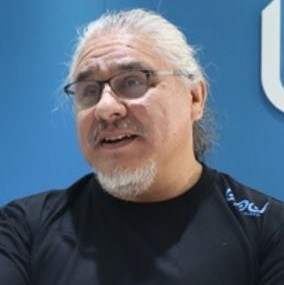

The Industry Advisory Board (IAB) consists of designated representatives of the center members, which are the companies, non-NSF federal and/or state government agencies who have invested the annual fees for membership in the CAC. The IAB selects a chair and co-chair to conduct the business of the center, which takes place at periodic teleconferences and at two designated semi-annual meetings of the entire center that are generally conducted in person at one of the CAC sites or at a convenient intermediate location. The IAB selects the research projects of the center as a whole, approves the budgets, approves and revises bylaws and policies, and is responsible for coordinating work on all such topics with the assistance of the center and site directors listed below, consistent with National Science Foundation (NSF) guidlines for its Industry/University Cooperative Research Centers (I/UCRC) program.
| Name | Contact | ||
|---|---|---|---|
| Carlos Nevarez, BPU Holdings, Chair |  |
Carlos ‘Art’ Nevarez can design software architecture like a true avant-garde. With a hi-tech career spanning over 30 years, Carlos is an expert in Computer Science and technology and is adept in all areas of software development including nascent technologies and protocols. Currently, Carlos is dedicated to the first Artificial Emotional Intelligent (AEI) platform at BPU Holdings. He currently produces infrastructures dedicated to building intelligent “bots” or automatons that can interact with human users in a natural style. He is committed to creating a general-purpose platform to train medical assistants to interact with all users involved in the care and management of patients and patient data. He is an expert software developer and team leader in technologies including cloud computing, SaaS, enterprise security, machine learning, big data analytics, and systems architecture. Previous to BPU, he served positions as CEO at BizzBlizz, CTO at Enlightened Wealth Institute, Director at Fusion-IO, VP of IT at Nature’s Sunshine and Chief Architect of Java Tech Group at Novell, where he worked closely with then CEO, Eric Schmidt. When asked about his most favourable experience, he replies that it is his current projects at BPU Holdings. His focus is on artificial intelligence with the heart of it being Natural Language sciences – recognition, processing and emulation. Carlos is devoted to building models to identify, learn and even synthesize human emotion, known as Artificial Emotional Intelligence (AEI). When Carlos is not working Seoul, he spends his time with family in Utah. He enjoys hiking outdoors and restoring muscle cars and motorbikes as well. |
Contact: art@bpuholdings.com |
| Jon Hass, Dell Inc., Vice Chair |
|
Contact: jon.hass@dell.com |
The Center Directors manage overall industry and NSF relations, set the tone and policies for the CAC under direction of the IAB leadership, and communicate and coordinate between sites to keep the overall CAC program on track. They report to the IAB at each semi-annual meeting on the center status, current primary and affiliate sites, center finances and research program, research topics and future directions, center output, results, and related activities. They also report metrics on these topics annually to the NSF in a written report, and perform other duties on behalf of the IAB.
| Name | Contact | ||
|---|---|---|---|
| Alan Sill, Co-Director |  |
CAC Center Co-Director Dr. Alan Sill holds positions at Texas Tech as Managing Director of the High Performance Computing Center and Adjunct Professor of Physics. Dr. Sill holds a PhD in particle physics from American University and has an extensive track record of work in scientific computing. He has published extensively in topics spanning cloud and grid computing, scientific computing, particle and nuclear physics, cosmic ray physics and radioisotope analysis. He serves as President of the Open Grid Forum, an international computing standards organization. He is an active member of the IEEE Standards Organization, DMTF, and other computing standards working groups, and serves either directly or as liaison for the Open Grid Forum on several national and international standards roadmap committees. Sill is a past member of the editorial board for IEEE Cloud Computing and current member of the advisory boards for the StandICT international standards coordination project and several other EU-funded projects. He has helped to launch several large-scale cloud and grid computing projects, including the Open Science Grid (OSG), the Worldwide Large Hadron Collider Grid, Southeastern Universities Research Association SURAgrid, and Texas Internet Grid for Research and Education (TIGRE), and has served as general chair, program committee chair, or principal organizer for several different international conferences including the IEEE/ACM Utility and Cloud Computing (UCC) and Big Data Computing, Applications, and Technologies (BDCAT) and IEEE International Conference on Autonomic Computing (ICAC), as well as the ongoing set of workshops on Data Center Automation, Analytics, and Control (DAAC) held at the IEEE/ACM International Conference for High Performance Computing, Networking, Storage, and Analysis (Supercomputing) conference series. He leads cloud interoperability testbed projects within the US NSF Chameleon, CloudLab and XSEDE research facilities and was one of the organizers for the Cloud Plugfest series of hands-on developer-oriented cloud testing conferences. Further biographical information for Dr. Sill is available on EDUCAUSE. |
Texas Tech University |
| Salim Hariri, Co-Director |
 |
CAC Center Co-Director Dr. Salim Hariri is a professor of computer science and Director of the Autonomic Computing Laboratory (ACL) at University of Arizona, and served as previous Site Director for the CAC at U ov A. He is and one of the leading experts in the fields of autonomic computing and virtualization, author of four scholarly books and monographs and published extensively in the leading journals and conferences in these areas. He holds a PhD in Computer Engineering from the University of Southern California and an MSc in Electrical Engineering from The Ohio State University. The research conducted in his lab focuses on autonomic computing, self-protection of networks and computers, self-control and management of network centric systems, high performance distributed computing, agent-based control and management of networked systems, performance analysis of parallel and distributed systems, software design tools for large scale interactive networked systems, high speed networks and communications protocols, cyber security , and proactive network management. Professor Hariri has served as the general chair or on the program committees and steering committees for the International Conference on Autonomic Computing (ICAC), International Symposium on High Performance Distributed Computing (HPDC), IEEE International Conference on Computer Systems and Applications. Salim Hariri is also Editor in Chief of the Journal of Cluster Computing which is a premier forum for presenting the latest research and applications in parallel processing, distributed computing systems, cloud computing, virtualization and computer networks. |
University of Arizona |
The CAC university site directors allow site research programs to be managed locally at each university, facilitate reporting to NSF and communication with researchers and local university administration, and coordinate with the center directors to carry out the research program selected by the IAB. The current CAC primary and affiliate site directors and institutions are listed below. Primary sites have multi-year grants from NSF that cover the administrative costs of running the center at their universities, and can optionally sponsor affiliate sites that work with the CAC through their sites.
| Name | Contact | ||
|---|---|---|---|
| Yong Chen, Site Director, Texas Tech University |  |
TTU Site Director Dr. Yong Chen is an Assistant Professor of Computer Science. He leads the Data-Intensive Scalable Computing Laboratory (DISCL) at Texas Tech University, and has broad research interests in parallel and distributed computing, high performance computing, cloud computing, computer architectures and systems software. The focus of his recent work has been on building scalable computing systems for data-intensive applications in high-performance scientific computing and high-end enterprise computing. His group also has extensive expertise in hardware and software methods for data-intensive computing, and has made advances in hardware technologies for improving scalability and efficiency of scientific computing capabilities and Big Data applications, including dynamic active methods for high performance I/O in storage systems. Dr. Chen has co-chaired and served on the program committees of several recent conferences in data-intensive scalable computing systems and programming models for parallel computing, systems software, and cluster, grid and cloud computing. He led the Student Cluster Competition team for Texas Tech University at the 2012 ACM/IEEE Supercomputing Conference. |
Texas Tech University |
| Ali Akoglu, Site Director, University of Arizona |
 |
Dr. Ali Akoglu is the director of the Reconfigurable Computing Lab, UA site director of the NSF Center for Cloud and Autonomic Computing, and director of the NVIDIA CUDA Teaching Center. He received his Ph.D. degree in Computer Science from the Arizona State University in 2005. Dr. Akoglu is an expert in high performance scientific computing and parallel computing with a primary focus on restructuring computationally challenging algorithms for achieving high performance on field programmable gate array (FPGA) and graphics processing unit (GPU) hardware architectures. He has been involved in many crosscutting collaborative projects with the goal of solving the challenges of bridging the gap between the domain scientist and highly-parallel hardware architectures under the umbrella of organizations such as the BIO5 Institute and iPlant Collaborative. His research projects have been funded by the National Science Foundation, US Air Force, NASA Jet Propulsion Laboratories, Army Battle Command Battle Laboratory, and industry partners such as Nvidia and Huawei. |
University of Arizona |
University researchers wishing to participate in the CAC program of research can do so by creating CAC sites through detailed memoranda of understanding that are organized to carry our this research consistent with NSF I/UCRC guidelines through CAC primary sites. The primary site is responsible for sponsoring this affiliation, which is designed to extend the pool of researchers available to fulfill the goals of projects selected by the IAB. Affiliate sites can apply to become CAC primary sites when they reach the qualifications set by NSF for a fully sustaining set of industry memberships brought into the CAC by that site.
| Name | Contact | ||
|---|---|---|---|
| Ravi Vadapalli, Affiliate Site Director, University of North Texas |
 |
Dr. Vadapalli is the director of UNT Research IT Services and former site director at of the NSF IUCRC Cloud and Autonomic Computing Center at Texas Tech University and leads the CAC affiliate site program at UNT. He has extensive experience in advanced distributed computing, research development in both disciplinary and interdisciplinary areas through data-intensive computing and fostering industry-research partnerships. Dr. Vadapalli was one of the principal members of the developer team for the Texas Internet Grid for Research and Education, TIGRE, and led the demonstration of grid and cloud computing methods for the Petroleum Engineering Grid, PEGrid. He also has been deeply involved in the development of methods for the use of advanced high-performance computing for simulation and modeling in cancer radiotherapy and other related applications. Dr. Vadapalli is a frequent speaker on these topics to a variety of professional industry-based and academic organizations. His current interests are in fostering new collaborations, industry-academia partnerships and grant opportunities that enhance the visibility and leadership of the University of North Texas in higher education. |
University of North Texas |
| Ziliang Zong, Affiliate Site Director, Texas State University |
 |
Dr. Zong is an Associate Professor of the Computer Science Department and leads the CAC affiliate site at Texas State. He is the recipient of the 2015 Texas State University Presidential Award for Excellence in Scholarly/Creative Activities. He received his Ph.D. degree in Computer Science and Software Engineering from Auburn University in 2008 with the Distinguished Dissertation Award. He received B.S.(2002) and M.S.(2005) degrees in Computer Science from Shandong University, China. Dr. Zong serves as the associate editor of Sustainable Computing Journal (SUSCOM). His research is currently focused on Energy-Efficient Computing and Systems, Big Data Analytics, Green Software Design, and Edge Computing. |
Texas State University |